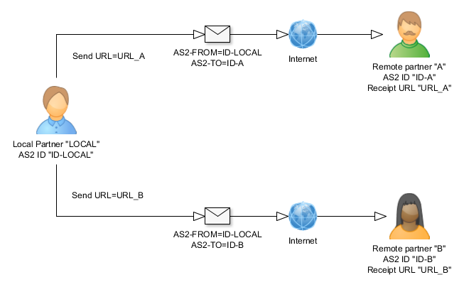
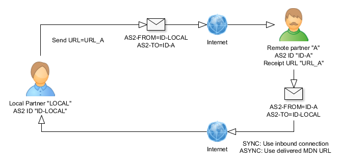
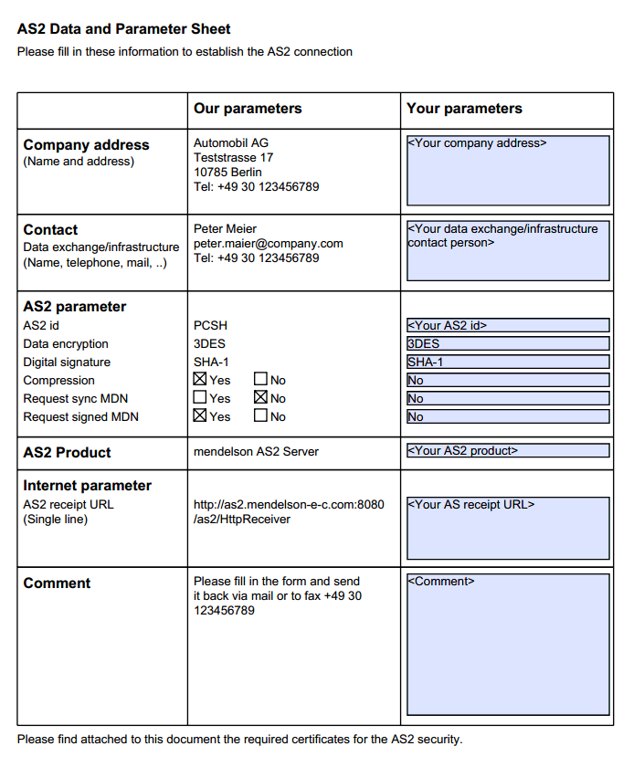

Partner sind im AS2 Server alle Parteien der Kommunikation. Ein Partner nimmt eine gesonderte Stellung ein: die lokale Station (es können mehrere definiert werden). Es werden folgende Icons benutzt:
| Lokale Station | |
| Entfernter AS2 Partner |
Lokale Station und Partner haben eine geringfügig andere Konfiguration. Die GUI beachtet dies, bitte wundern Sie sich aus diesen Gründen nicht darüber, dass einige Felder bei dem einen oder anderen ausgegraut sind. Ausgegraute Felder sind Konfigurationsdaten, die für den Partner in der jeweiligen Position nicht relevant sind.
Es muss immer mindestens eine lokale Station definiert sein, sie können
aber natürlich beliebig viele definieren und damit verschiedene Identitäten
annehmen.
Lokale Stationen haben weniger Einstellungsmöglichkeiten als dazugehörige
Partner. Wenn Sie also eine lokale Station definiert haben, sind einige Reiter
der Konfigurationseinstellung nicht mehr erreichbar.
Über die Einstellungen des Servers definieren Sie das Sende- und Empfangsverhalten von Nachrichten (partnerspezifisch). Hierbei gibt es folgende Einstellungen:
Allgemein:
Jeder Partner und auch die lokale Station hat einen internen Namen und eine öffentliche AS2 Kennung. Diese AS2 Kennung muss sowohl vom Sender als auch vom Empfänger für einen Kommunikationskanal benutzt werden. Sie müssen also Ihren Partnern Ihre AS2 id mitteilen, damit diese Ihre Nachrichten identifizieren können. Es ist nicht möglich, mehrere Partner mit der gleichen Kennung zu definieren, ansonsten wäre es eingangsseitig nicht möglich, den Nachrichtenempfänger eindeutig zu identifizieren
Sicherheit:
AS2 unterstützt das digitale Signieren und die Verschlüsselung von
Nachrichten. Es gibt jeweils verschiedene Verschlüsselungsalgorithmen und
Signaturalgorithmen (Hashalgorithmen). Sender und Empfänger einer Nachricht müssen die
gleichen Algorithmen wählen, ansonsten kann eine Kommunikation nicht zustande
kommen.
Für die AS2 Kommunikation müssen sich beide Partner also vorher über
die zu benutzene Sicherheit und die entsprechenden Algorithmen verabreden. Wenn
ein Partner mit Ihnen Daten austauschen möchte, teilen Sie ihm bitte die
Sicherheitseinstellungen mit.
Die hier getätigten Einstellungen stellen nicht nur ausgangsseitig die Eckdaten für die Sicherheit dar. Vielmehr ist die eingestellte Verschlüsselung auch die erwartete Verschlüsselung eingehender Nachrichten dieses Partners. Wenn Sie zum Beispiel "TripleDES" als Verschlüsselung einstellen und Ihr Partner Ihnen unverschlüsselte Nachrichten schickt, wird die Transaktion mit dem Hinweis insufficient-message-security zurückgewiesen.
Der hier eingestellte Signaturalgorithmus (zum Beispiel MD5, SHA-1) ist auch der, der für eine (eventuell) signierte MDN Ihres Transaktionspartners erwartet wird.
Bitte beachten Sie, dass die SHA-2 Hashalgorithmen (SHA-256, SHA-384, SHA-256) nicht Teil der AS2 Standarddefinition sind. Sie sind Teil des optionalen AS2 Profils "SHA-2". Dieses optionale Profil wurde Ende 2012 eingeführt und kam in den ersten AS2 Produkten Mitte 2013 zum Einsatz. Wenn Ihr Partner eine ältere Version einer AS2 Software hat oder in seinem Produkt dieses optionale Profil nicht unterstützt wird, können Sie für den fehlerfreien Datenaustuasch nicht auf die die SHA-2 Hashalgorithmen zurückgreifen.
mendelson AS2 unterstützt das optionale Profil SHA-2 seit "mendelson AS2 2013 build 274", herausgekommen in 09/2013.
Sicherheit/Signatur:
Hier stellen Sie den Algorithmus ein, mit dem die Daten signiert werden
sollen. Die digitale Signatur stellt sicher, dass die Daten auf dem Übertragungsweg
nicht modifiziert wurden und erlaubt ausserdem eine eindeutige Überprüfung,
dass der Absender der richtige ist.
Sie finden neben den normalen SHA-n Signaturalgorithmen auch SHA-n Algorithmen mit dem Zusatz "RSASSA-PSS". Der Grund, warum zwei verschiedene Signaturschemata unterstützt werden, findet sich im RFC 4056:
1.1. PSS Algorithm
Although there are no known defects with the PKCS #1 v1.5 [P1v1.5]
signature algorithm, RSASSA-PSS [P1v2.1] was developed in an effort
to have more mathematically provable security. PKCS #1 v1.5
signatures were developed in an ad hoc manner; RSASSA-PSS was
developed based on mathematical foundations.
Einige Partner fordern explizit das RSASSA-PSS Signaturschema ein.
Es gibt einige Signaturalgorithmen, die allgemein als nicht mehr sicher gelten
und daher unter Umständen nicht empfehlenswert sind.
Letzendlich liegt es (wie bei allen Parametern) immer in Ihrem Ermessen und
der Abstimmung mit Ihrem Partner, ob Sie diese verwenden möchten.
Um unsere unverbindlichen Empfehlungen zu visualisieren, verwenden wir bei der
Darstellung und Auswahl der Signaturalgorithmen folgende Icons mit folgenden
Bedeutungen:
| Kein Signaturalgorithmus | |
| Der Signaturalgorithmus wird allgemein als unsicher eingestuft (unverbindliche Empfehlung zum Zeitpunkt des Releases) | |
| Der Signaturalgorithmus wird allgemein als recht sicher eingestuft (unverbindliche Empfehlung zum Zeitpunkt des Releases) |
Hierbei haben folgende Signatureinstellungen die folgende Bedeutung:
| Eintrag | Verwendeter Algorithmus | Hinweise |
|---|---|---|
| MD5 | MD5 | Message-Digest Algorithm 5 (MD5) ist eine weit verbreitete kryptographische Hashfunktion, die aus einer beliebigen Nachricht einen 128-Bit-Hashwert erzeugt. Bitte verwenden Sie diesen Algorithmus nur, wenn Ihr Partner das einfordert, da er nicht sicher ist! |
| SHA-1 | EC Schlüssel: SHA1withECDSA RSA Schlüssel: SHA1withRSA |
RSA Schlüssel: PKCS#1 v1.5. SHA-224, SHA-256, SHA-384 und SHA-512: Die angefügte Zahl bezeichnet jeweils die Länge des Hash-Werts (in Bit). Diese Weiterentwicklungen von SHA-1 werden häufig unter der Bezeichnung SHA-2 zusammengefasst. |
| SHA-256 | EC Schlüssel: SHA256withECDSA RSA Schlüssel: SHA256withRSA |
RSA Schlüssel: PKCS#1 v1.5. SHA-224, SHA-256, SHA-384 und SHA-512: Die angefügte Zahl bezeichnet jeweils die Länge des Hash-Werts (in Bit). Diese Weiterentwicklungen von SHA-1 werden häufig unter der Bezeichnung SHA-2 zusammengefasst. |
| SHA-384 | EC Schlüssel: SHA384withECDSA RSA Schlüssel: SHA384withRSA |
RSA Schlüssel: PKCS#1 v1.5. SHA-224, SHA-256, SHA-384 und SHA-512: Die angefügte Zahl bezeichnet jeweils die Länge des Hash-Werts (in Bit). Diese Weiterentwicklungen von SHA-1 werden häufig unter der Bezeichnung SHA-2 zusammengefasst. |
| SHA-512 | EC Schlüssel: SHA512withECDSA RSA Schlüssel: SHA512withRSA |
RSA Schlüssel: PKCS#1 v1.5. SHA-224, SHA-256, SHA-384 und SHA-512: Die angefügte Zahl bezeichnet jeweils die Länge des Hash-Werts (in Bit). Diese Weiterentwicklungen von SHA-1 werden häufig unter der Bezeichnung SHA-2 zusammengefasst. |
| SHA-1 (RSA SSA-PSS Signaturschema) | EC Schlüssel: Nicht unterstützt RSA Schlüssel: SHA1withRSAandMGF1 |
RFC 3447, PKCS#1v2.1 RSASSA-PSS Signaturschema mit SHA-1 als Hash Algorithmus und MGF1, Probabilistic Signature Scheme |
| SHA-224 (RSA SSA-PSS Signaturschema) | EC Schlüssel: Nicht unterstützt RSA Schlüssel: SHA224withRSAandMGF1 |
RFC 3447, PKCS#1v2.1 RSASSA-PSS Signaturschema mit SHA-224 als Hash Algorithmus und MGF1, Probabilistic Signature Scheme |
| SHA-256 (RSA SSA-PSS Signaturschema) | EC Schlüssel: Nicht unterstützt RSA Schlüssel: SHA256withRSAandMGF1 |
RFC 3447, PKCS#1v2.1 RSASSA-PSS Signaturschema mit SHA-256 als Hash Algorithmus und MGF1, Probabilistic Signature Scheme |
| SHA-384 (RSA SSA-PSS Signaturschema) | EC Schlüssel: Nicht unterstützt RSA Schlüssel: SHA384withRSAandMGF1 |
RFC 3447, PKCS#1v2.1 RSASSA-PSS Signaturschema mit SHA-384 als Hash Algorithmus und MGF1, Probabilistic Signature Scheme |
| SHA-512 (RSA SSA-PSS Signaturschema) | EC Schlüssel: Nicht unterstützt RSA Schlüssel: SHA512withRSAandMGF1 |
RFC 3447, PKCS#1v2.1 RSASSA-PSS Signaturschema mit SHA-512 als Hash Algorithmus und MGF1. Bitte beachten Sie, dass die Schlüssellänge größer als 1024 bit sein muss, ansonsten kommt es zu der Fehlermeldung "key too small for specified hash and salt lengths", Probabilistic Signature Scheme |
Bei der Signatur der MDN wird versucht, das gleiche Signaturschema zu verwenden, wie es auch für eingehende AS2 Nachrichten verwendet wurde. Wenn also eine eingehende Nachricht mit SHA-1 (RSA SSA-PSS) signiert wurde und SHA-1 als möglicher Signaturalgorithmus für die MDN in den Disposition Notification Options (HTTP header) der eingehenden AS2 Nachricht gelistet ist, wird auch die MDN mit SHA-1 (RSA SSA-PSS) signiert.
Es gibt einige Verschlüsselungsgorithmen, die allgemein als nicht mehr
sicher gelten und daher unter Umständen nicht empfehlenswert sind.
Letzendlich liegt es (wie bei allen Parametern) immer in Ihrem Ermessen und
der Abstimmung mit Ihrem Partner, ob Sie diese verwenden möchten.
Um unsere unverbindlichen Empfehlungen zu visualisieren, verwenden wir bei der
Darstellung und Auswahl der Verschlüsselungsalgorithmen folgende Icons
mit folgenden Bedeutungen:
| Unverschlüsselt | |
| Der Verschlüsselungsalgorithmus wird allgemein als unsicher eingestuft (unverbindliche Empfehlung zum Zeitpunkt des Releases) | |
| Der Verschlüsselungsalgorithmus wird allgemein als recht sicher eingestuft (unverbindliche Empfehlung zum Zeitpunkt des Releases) |
Hierbei haben folgende Verschlüsselungseinstellungen die folgende Bedeutung:
| Eintrag | Verwendeter Algorithmus | Hinweise |
|---|---|---|
| 3DES | 3DES | Mehrfachanwendung des DES zur Vergrösserung der Schlüssellänge,
wird auch als Triple-DES, TDES, 3DES oder DESede bezeichnet. Der Triple Data Encryption Algorithm (3DES) wurde vom NIST (National Institute of Standards and Technology, US) offiziell aus dem Verkehr gezogen. Dies geht aus einem Richtlinienentwurf hervor, den das NIST am 19. Juli 2018 veröffentlicht hat. Laut dem Standard wird 3DES nach einer öffentlichen Debatte für alle neuen Anwendungen veraltet sein, und seine Verwendung wird nach 2023 verboten sein. |
| RC2-40 | RC2 | RC2 ist eine 64 Bit Blockchiffre mit variabler Schlüssellänge, die von Ronald Rivest als möglicher Ersatz für DES im Jahr 1987 entwickelt wurde. RC steht für Rivest Cipher oder Ron’s Code. RC2 ist verwundbar gegenüber einem Angriff mit verwandtem Schlüssel, welcher 234 Klartextblöcke benötigt. |
| RC2-64 | RC2 | RC2 ist eine 64 Bit Blockchiffre mit variabler Schlüssellänge, die von Ronald Rivest als möglicher Ersatz für DES im Jahr 1987 entwickelt wurde. RC steht für Rivest Cipher oder Ron’s Code. RC2 ist verwundbar gegenüber einem Angriff mit verwandtem Schlüssel, welcher 234 Klartextblöcke benötigt. |
| RC2-128 | RC2 | RC2 ist eine 64 Bit Blockchiffre mit variabler Schlüssellänge, die von Ronald Rivest als möglicher Ersatz für DES im Jahr 1987 entwickelt wurde. RC steht für Rivest Cipher oder Ron’s Code. RC2 ist verwundbar gegenüber einem Angriff mit verwandtem Schlüssel, welcher 234 Klartextblöcke benötigt. |
| RC2-196 | RC2 | RC2 ist eine 64 Bit Blockchiffre mit variabler Schlüssellänge, die von Ronald Rivest als möglicher Ersatz für DES im Jahr 1987 entwickelt wurde. RC steht für Rivest Cipher oder Ron’s Code. RC2 ist verwundbar gegenüber einem Angriff mit verwandtem Schlüssel, welcher 234 Klartextblöcke benötigt. |
| AES-128 (CBC) | AES_CBC | Advanced Encryption Standard. Die Bezeichnungen der drei AES-Varianten AES-128, AES-192 und AES-256 beziehen sich jeweils auf die gewählte Schlüssellänge. Dies ist die Implementierung mit dem CBC Block Modus - dies ist ein relativ alter Modus, der in der Regel immer angefragt wird, wenn von "AES-128" die Rede ist. |
| AES-192 (CBC) | AES_CBC | Advanced Encryption Standard. Die Bezeichnungen der drei AES-Varianten AES-128, AES-192 und AES-256 beziehen sich jeweils auf die gewählte Schlüssellänge. Dies ist die Implementierung mit dem CBC Block Modus - dies ist ein relativ alter Modus, der in der Regel immer angefragt wird, wenn von "AES-192" die Rede ist. |
| AES-256 (CBC) | AES_CBC | Advanced Encryption Standard. Die Bezeichnungen der drei AES-Varianten AES-128, AES-192 und AES-256 beziehen sich jeweils auf die gewählte Schlüssellänge. Dies ist die Implementierung mit dem CBC Block Modus - dies ist ein relativ alter Modus, der in der Regel immer angefragt wird, wenn von "AES-256" die Rede ist. |
| AES-128 (GCM) | AES_GCM | Advanced Encryption Standard. Die Bezeichnungen der drei AES-Varianten AES-128, AES-192 und AES-256 beziehen sich jeweils auf die gewählte Schlüssellänge. Dies ist die Implementierung mit dem Galois/Counter Modus (GCM). Dieser Algorithmus wird ebenfalls im TLS verwendet, er ist ab TLS 1.2 obligatorisch, definiert im RFC 5288. |
| AES-192 (GCM) | AES_GCM | Advanced Encryption Standard. Die Bezeichnungen der drei AES-Varianten AES-128, AES-192 und AES-256 beziehen sich jeweils auf die gewählte Schlüssellänge. Dies ist die Implementierung mit dem Galois/Counter Modus (GCM). Dieser Algorithmus wird ebenfalls im TLS verwendet, er ist ab TLS 1.2 obligatorisch, definiert im RFC 5288. |
| AES-256 (GCM) | AES_GCM | Advanced Encryption Standard. Die Bezeichnungen der drei AES-Varianten AES-128, AES-192 und AES-256 beziehen sich jeweils auf die gewählte Schlüssellänge. Dies ist die Implementierung mit dem Galois/Counter Modus (GCM). Dieser Algorithmus wird ebenfalls im TLS verwendet, er ist ab TLS 1.2 obligatorisch, definiert im RFC 5288. |
| AES-128 (CBC, RSAES_AOEP) | AES-128_CBC RSAES_AOEP pkcs#1v2.1 SHA-256 | Advanced Encryption Standard (Encryption Scheme Optimal Asymmetric Encryption Padding [RFC 3447]), Schlüsselverschlüsselungsalgorithmus ist RSAES_AOEP. |
| AES-192 (CBC, RSAES_AOEP) | AES-192_CBC RSAES_AOEP pkcs#1v2.1 SHA-256 | Advanced Encryption Standard (Encryption Scheme Optimal Asymmetric Encryption Padding [RFC 3447]), Schlüsselverschlüsselungsalgorithmus ist RSAES_AOEP. |
| AES-256 (CBC, RSAES_AOEP) | AES-256_CBC RSAES_AOEP pkcs#1v2.1 SHA-256 | Advanced Encryption Standard (Encryption Scheme Optimal Asymmetric Encryption Padding [RFC 3447]), Schlüsselverschlüsselungsalgorithmus ist RSAES_AOEP. |
| AES-128 (GCM, RSAES_AOEP) | AES-128_CBC RSAES_AOEP pkcs#1v2.1 SHA-256 | Advanced Encryption Standard (Encryption Scheme Optimal Asymmetric Encryption Padding [RFC 3447]), Schlüsselverschlüsselungsalgorithmus ist RSAES_AOEP. |
| AES-192 (GCM, RSAES_AOEP) | AES-192_CBC RSAES_AOEP pkcs#1v2.1 SHA-256 | Advanced Encryption Standard (Encryption Scheme Optimal Asymmetric Encryption Padding [RFC 3447]), Schlüsselverschlüsselungsalgorithmus ist RSAES_AOEP. |
| AES-256 (GCM, RSAES_AOEP) | AES-256_CBC RSAES_AOEP pkcs#1v2.1 SHA-256 | Advanced Encryption Standard (Encryption Scheme Optimal Asymmetric Encryption Padding [RFC 3447]), Schlüsselverschlüsselungsalgorithmus ist RSAES_AOEP. |
| AES-128 (CCM) | AES_CCM | Advanced Encryption Standard. Die Bezeichnungen der drei AES-Varianten AES-128, AES-192 und AES-256 beziehen sich jeweils auf die gewählte Schlüssellänge. Dies ist die Implementierung mit dem Counter with CBC-MAC Modus (CCM). |
| AES-192 (CCM) | AES_CCM | Advanced Encryption Standard. Die Bezeichnungen der drei AES-Varianten AES-128, AES-192 und AES-256 beziehen sich jeweils auf die gewählte Schlüssellänge. Dies ist die Implementierung mit dem Counter with CBC-MAC Modus (CCM). |
| AES-256 (CCM) | AES_CCM | Advanced Encryption Standard. Die Bezeichnungen der drei AES-Varianten AES-128, AES-192 und AES-256 beziehen sich jeweils auf die gewählte Schlüssellänge. Dies ist die Implementierung mit dem Counter with CBC-MAC Modus (CCM). |
| CAMELLIA-128 (CBC) | CAMELLIA_128 | Camellia ist eine symmetrische Blockchiffre mit einer Blockgröße von 128 Bit und Schlüsselgrößen von 128, 192 und 256 Bit. Sie wurde gemeinsam von Mitsubishi Electric und NTT (Japan) entwickelt. Die Chiffre wurde von der ISO/IEC, dem NESSIE-Projekt der Europäischen Union und dem japanischen CRYPTREC-Projekt zur Verwendung zugelassen. Die Chiffre verfügt über Sicherheitsstufen und Verarbeitungsmöglichkeiten, die mit dem Advanced Encryption Standard vergleichbar sind. Sie ist in RFC 5528 definiert. |
| CAMELLIA-192 (CBC) | CAMELLIA_192 | Camellia ist eine symmetrische Blockchiffre mit einer Blockgröße von 128 Bit und Schlüsselgrößen von 128, 192 und 256 Bit. Sie wurde gemeinsam von Mitsubishi Electric und NTT (Japan) entwickelt. Die Chiffre wurde von der ISO/IEC, dem NESSIE-Projekt der Europäischen Union und dem japanischen CRYPTREC-Projekt zur Verwendung zugelassen. Die Chiffre verfügt über Sicherheitsstufen und Verarbeitungsmöglichkeiten, die mit dem Advanced Encryption Standard vergleichbar sind. Sie ist in RFC 5528 definiert. |
| CAMELLIA-256 (CBC) | CAMELLIA_256 | Camellia ist eine symmetrische Blockchiffre mit einer Blockgröße von 128 Bit und Schlüsselgrößen von 128, 192 und 256 Bit. Sie wurde gemeinsam von Mitsubishi Electric und NTT (Japan) entwickelt. Die Chiffre wurde von der ISO/IEC, dem NESSIE-Projekt der Europäischen Union und dem japanischen CRYPTREC-Projekt zur Verwendung zugelassen. Die Chiffre verfügt über Sicherheitsstufen und Verarbeitungsmöglichkeiten, die mit dem Advanced Encryption Standard vergleichbar sind. Sie ist in RFC 5528 definiert. |
| CHACHA20-POLY1305 | CHACHA20-POLY1305 | Die ChaCha20-Stream-Chiffer und der Poly1305 Message Authentication Code (MAC) wurden 2005 und 2008 unabhängig voneinander von Daniel J. Bernstein entwickelt. Sie sind für ihre Einfachheit, Geschwindigkeit und Sicherheit bekannt. ChaCha20 verwendet einen 256-Bit-Schlüssel. ChaCha20 ist einer der schnellsten verfügbaren Verschlüsselungsalgorithmen. Er ist im RFC 7539 definiert. |
| RC4-40 | RC4 | RC4 (Ron’s Code 4) wurde 1987 von Ronald L. Rivest entwickelt. Im Februar 2015 wurde mit RFC 7465 der Einsatz von RC4 im Rahmen von TLS verboten, da es erhebliche Sicherheitsmängel aufweist. Das Bundesamt für Sicherheit in der Informationstechnik rät von der Verwendung von RC4 ab. |
| RC4-56 | RC4 | RC4 (Ron’s Code 4) wurde 1987 von Ronald L. Rivest entwickelt. Im Februar 2015 wurde mit RFC 7465 der Einsatz von RC4 im Rahmen von TLS verboten, da es erhebliche Sicherheitsmängel aufweist. Das Bundesamt für Sicherheit in der Informationstechnik rät von der Verwendung von RC4 ab. |
| RC4-128 | RC4 | RC4 (Ron’s Code 4) wurde 1987 von Ronald L. Rivest entwickelt. Im Februar 2015 wurde mit RFC 7465 der Einsatz von RC4 im Rahmen von TLS verboten, da es erhebliche Sicherheitsmängel aufweist. Das Bundesamt für Sicherheit in der Informationstechnik rät von der Verwendung von RC4 ab. |
| DES | DES | März 2006: Der FPGA-basierte Parallelrechner COPACOBANA kostet weniger als 10.000 Dollar (Materialkosten) und bricht DES in weniger als 9 Tagen - dieser Algorithmus gilt aber bereits seit 1999 als gebrochen. |
Algorithm Identifier Protection Attribute
Die beim AS2 verwendete kryptographische Nachrichtensyntax (CMS) ist im Gegensatz
zu X.509/PKIX
Zertifikaten anfällig für Algorithmus-Substitution-Angriffe.
In einem Algorithmus-Substitutionsangriff ändert der Angreifer entweder
den Algorithmus oder die Parameter des Algorithmus und verändert damit
das Ergebnis der Signaturprüfung. Somit kann der Angreifer die Signaturprüfung
aushebeln.
Das Attribut "Algorithm Identifier Protection Attribute"
enthält nun eine Kopie der entsprechenden Algorithmus-Identifikatoren,
so dass diese durch den Signatur- oder Authentifizierungsprozess geschützt
sind.
Wenn Sie dieses Attribut nicht verwenden (zum Beispiel
aus Kompatibilitätsgründen mit alten AS2 Systemen), entspricht das
der gleichen Sicherheitsstufe, als ob Sie keine Datensignatur verwenden würden.
Versand:
Die Daten beim EDIINT AS2 werden über HTTP oder HTTPs verschickt. Es muss
also eine Empfänger URL für jeden Kommunikationspartner vorhanden
sein. Diese Daten können Sie von Ihrem Kommunikationspartner erfahren.
AS2 ist ein Punkt-zu-Punkt Protokoll - beide Systeme müssen für den
Datenaustausch online sein.
Subject und Content Type der Nachrichten sollten Sie nur auf Nachfrage Ihres
Kommunikationspartners ändern.
Es gibt zusätzlich die Möglichkeit, pro Partner das Content Transfer
Encoding zu setzen. Das bezeichnet das Encoding der Daten während des Transports.
Normalerweise ist dies "binary", man kann aber auch "base64"
wählen.
Es gibt verschiedene AS2 Standards mit unterschiedlichen Leistungsmerkmalen.
Wenn Ihr Kommunikationspartner eine AS2 Lösung >= AS2 1.1 einsetzt,
können Sie Ihre Nutzdaten vor dem Verschicken komprimieren und somit das
zu versendene Datenvolumen verringern.
Das System überträgt den original Dateinamen automatisch. Dazu wird
in der AS2 Nachrichtenstruktur im Payment Header ein gesonderter Eintrag angelegt:
Content-Disposition: attachment; filename=myfile.txt
Da es nach RFC 822 nicht zulässig ist, Zeichen > ASCII 127 in MIME Headern zu verwenden, wird der Dateiname encoded, wenn dies notwendig ist. So würde für die Datei "ö.txt" zum Beispiel der Dateiname in folgendem Format (RFC 2047, UTF-8, B) übertragen werden und müsste auf der Gegenseite entsprechend interpretiert werden, wenn damit gearbeitet werden soll:
Content-Disposition: attachment; filename="=?UTF-8?B?w7YudHh0?="
MDN (Message Delivery Notification, Empfangsbestätigung):

Das AS2 Protokoll sieht für jede versandte Nachricht eine Versandbestätigung
vor. Eine Versandtransaktion ist erst abgeschlossen, wenn diese Bestätigung
(MDN) als Antwort auf eine AS2 Nachricht fehlerfrei empfangen oder versandt
wurde. Hierbei gibt es zwei verschiedene Möglichkeiten der Empfangsbestätigung.
Das eine ist die synchrone MDN, hierbei wird die Empfangsbestätigung direkt
auf der Kommunikationsverbindung des Senders geschickt. Das andere ist die asynchrone
MDN, hierbei wird vom Empfänger der Nachricht eine neue Verbindung aufgebaut
und darüber die MDN geschickt.
Im Fall der synchronen MDN wird also keine Empfangs-URL für die MDN benötigt,
im asynchronen Fall legt der Sender fest, wohin der Empfänger die MDN schicken
soll.
Es gibt keine festgelegte Zeit, nach der eine Transaktion auf einen Fehler läuft,
wenn keine asynchrone MDN innerhalb eines bestimmten Zeitfensters empfangen
wird. In der Regel liegt diese Zeit für asynchrone MDN jedoch bei 30 Minuten.
Sie können diesen Voreinstellungwert in den Servereinstellungen verändern.
Verzeichnisüberwachung:
Es gibt verschiedene Möglichkeiten, Nachrichten zu versenden. Eine davon
ist das direkte Ablegen von Dateien in bestimmten Verzeichnissen
für die jeweiligen Partner. Eine Verzeichnisüberwachung kann pro Partner
definiert werden, die sich alle (definierten) Dateien eines Verzeichnisses abholt,
diese AS2 konform einpackt, eventuell verschlüsselt, signiert und dann
verschickt. Sie können hier auch Dateien definieren, die vom Pollprozess
ignoriert werden sollen (Wildcards sind erlaubt). Die Möglichkeit, bestimmte Dateinamen zu ignorieren, ist notwendig, wenn Sie die zu versendenen Dateien über eine nichtransaktionale Operation in das Verzeichnis kopieren (z.B. via copy, über FTP Server oder ähnliches).
Die Liste der einzelnen zu ignorierenden Dateinamensmuster wird durch Komma getrennt, der Standardwert ist "*.tmp,*.temp". In den einzelnen Dateinamensmustern können folgende Zeichen verwendet werden, aus denen dann eine regular expression erstellt wird:
Jeder Dateiname im jeweiligen Pollverzeichnis, der auf diese Muster passt, wird ignoriert.
Hinweis:
Auch wenn es möglich sein sollte, ein Pollintervall von weniger als 1s
für die Verzeichnisüberwachung einzustellen, macht das keinen Sinn
und führt schnell zu einer Prozessorlast von 100%. Aus diesem Grund wird
die Verzeichnisüberwachung immer mit dem Mindestintervall von 1s arbeiten,
auch wenn Sie das anders konfigurieren. Sie müssen bedenken, dass ein Verzeichnispoll
das Holen aller Dateinamen eines Verzeichnisses und die Sortierung nach Datum
beinhaltet.
Mit der Anzahl der lokalen Stationen kann die Anzahl der Pollprozesse recht
schnell steigen und für eine entsprechend hohe Last sorgen - auch das sollten
Sie beim Einstellen der Pollintervalle beachten. Folgende Tabelle gibt Ihnen
exemplarisch einen Überblick, wie die Anzahl der Pollprozesse in Abhängigkeit
der lokalen Stationen recht schnell ansteigen kann. Das liegt daran, dass ein
Pollprozess immer für eine Partnerbeziehung (lokale Station-Partner) eingerichtet
wird und nicht nur für einen Partner.
| Anzahl lokaler Stationen | Partneranzahl | Anzahl der Pollprozesse |
|---|---|---|
| 1 | 10 | 10 |
| 2 | 10 | 20 |
| 5 | 10 | 50 |
Mit der Checkbox zur Verzeichnisüberwachung kann man den Pollprozess des
Verzeichnisses ausschalten. Dies kann helfen, die File IO zu verringern, ausserdem
können Sie einen automatischen Versand an einen bestimmten Partner damit
temporär unterbrechen.
Da dies im Fall einer dauerhaften Konfiguration den automatisierten Prozess
der Verzeichnisüberwachung unterbricht, müssten Sie dann entweder
die Daten manuell versenden (über "Datei-Datei an Partner senden im
Client") oder Sie müssten die Sendeaufträge in Ihrem jeweiligen
Flow über die Kommandozeile absetzen.
Empfang:
Es ist möglich (aber nicht standardisiert), den Dateinamen der übertragenen
Datei mitzusenden. Wenn das AS2 System Ihres Partners diese Funktion unterstützt,
können sie hier einstellen, ob Sie diesen Namen aus der Nachricht entnehmen
möchten.
HTTP Authentifizierung:
Neben digitaler Signatur, Verschlüsselung der Nachricht und Leitungsverschlüsselung (TLS/SSL, Transport Layer Security) gibt es die weitere Möglichkeit, für das Empfangen von Nachrichten auch noch Passwörter zu vergeben. Diese können Sie hier einstellen.
HTTP Header:
Diese Einstellungen erlauben einen tiefen Eingriff in die Versandstruktur der
AS2 Nachricht. Sie können damit alle HTTP Header partnerspezifisch verändern
oder neue hinzufügen. Bitte setzen Sie diese Einstellungen nur, wenn Sie
wirklich wissen, was Sie bewirken. Sie können durch das Überschreiben
von Headern für die Transaktionnummer oder ähnlichem etc die gesamte
Kommunikation zu diesem Partner stören oder verhindern.
Achtung:
Bevor Sie diese Konfigurationsmöglichkeit haben, müssen Sie in den
Einstellungen unter "Oberfläche" die Checkbox zum Anzeigen der
Header aktivieren.
Benachrichtigungen:
Wenn Sie mit Nachrichtenkontingenten arbeiten, können Sie hier die Benachrichtigungen
für das Überschreiten der Kontingente einstellen.
Achtung:
Bevor Sie diese Konfigurationsmöglichkeit haben, müssen Sie in den
Einstellungen unter "Oberfläche" die Checkbox zum Anzeigen der
Benachrichtigung der Kontingente aktivieren.
Nachbearbeitung:
Sie können nach Empfang oder Versand von Daten Nachbearbeitungsprozesse
auslösen. Detaillierte Informationen finden Sie im Abschnitt Nachbearbeitung.
Wenn Sie eine neue Verbindung einrichten, müssen Sie die
Kommunikationsparameter Ihres Partners kennen und ihm Ihre mitteilen.
Der mendelson AS2 Server unterstützt Sie dabei mit einem Datenblatt
der Kommunikationsparameter, das Sie automatisch erstellen können und
dem Partner schicken können. Dort stehen Ihre Parameter, der Partner
kann dann seine eigenen in dem Formular einpflegen und das Datenblatt
zurücksenden.
Dazu sollten Sie zunächst bei Ihrer lokalen Station Ihre Kontaktdaten
einpflegen (Tab "Kontakt" in der Partnerverwaltung). Den Dialog zum
Erstellen des Datenblattes finden Sie unter "Datei-Datenblatt für
Anbindung". Dort werden noch einige Zusatzinformationen Ihres Systems
benötigt (Empfangs-URL, KOmmentar), dann wird ein PDF erzeugt, das auf der
Partnerseite editierbare PDF Felder beinhaltet, die vom Partner ausgefüllt
werden können.

PDF Dateien können Anhänge beinhalten. In diesem Fall werden die Zertifikate angehängt, die Ihr Partner für die Verschlüsselung von Daten an Sie, den Aufbau einer SSL Verbindung und das Prüfen der digitalen Signatur benötigt.
Wenn Sie Mac OS X verwenden und den standard PDF Preview Reader verwenden, werden Sie diese Anhänge nicht sehen, das wird dort nicht unterstützt. Bitte installieren Sie in diesem Fall den Acrobat Reader.
| Last modified: $Date: 3/09/24 16:13 $ |